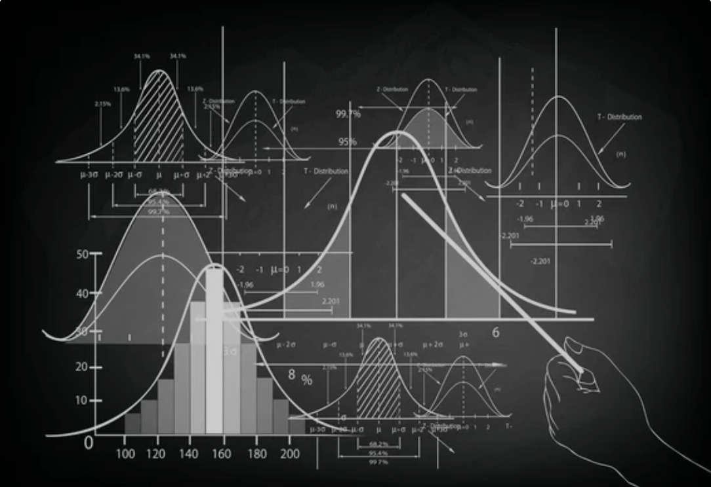
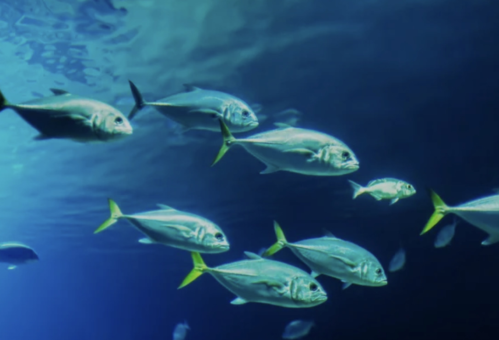

Débruitage d'image par moyennes non-locales
Ce projet vise à appliquer la méthode de la moyenne non-locale (Non-Local Means) pour débruiter une image en exploitant les similarités entre les pixels à travers toute l'image, et non seulement dans leur voisinage immédiat. En calculant une moyenne pondérée des pixels similaires à un pixel donné, cette technique permet de réduire le bruit tout en préservant les détails fins et les textures.
Classification de la base MNIST par réseau de neurones
L'objectif de ce projet est de construire un modèle de réseau de neurones convolutionnel (CNN) capable de classifier les images manuscrites du jeu de données MNIST, contenant des chiffres de 0 à 9.
Echantillonnage de gaussiennes
Application à la base de données MNIST

Ce projet consiste à implémenter un algorithme d'échantillonnage gaussien, permettant de générer des données à partir d'une distribution normale, et à l'appliquer sur la base de données MNIST pour modéliser la génération d'images de chiffres manuscrits.
équation de poisson en dimension 2

Ce projet se concentre sur la résolution de l'équation de Poisson en dimension 2 et l'étude des schémas numériques pour approcher efficacement la solution.
Synthèse du Contrôle Optimal
théorie et application
Ce projet s'appuie sur la théorie du contrôle et vise à étudier et optimiser le comportement des systèmes dynamiques soumis à des actions ou des commandes spécifiques.